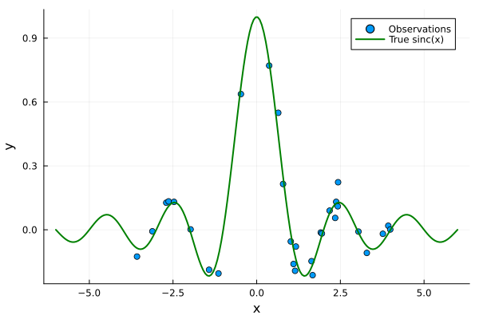
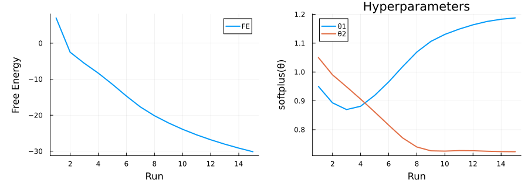
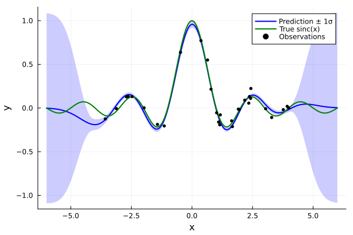
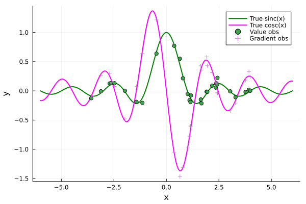
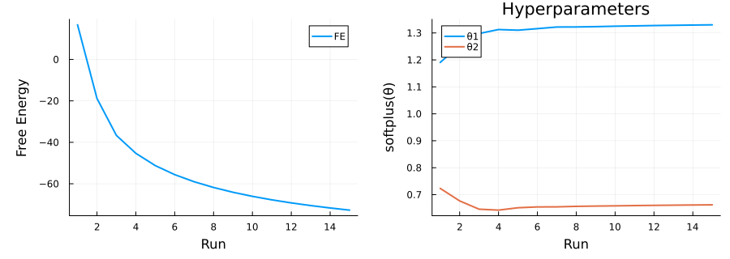
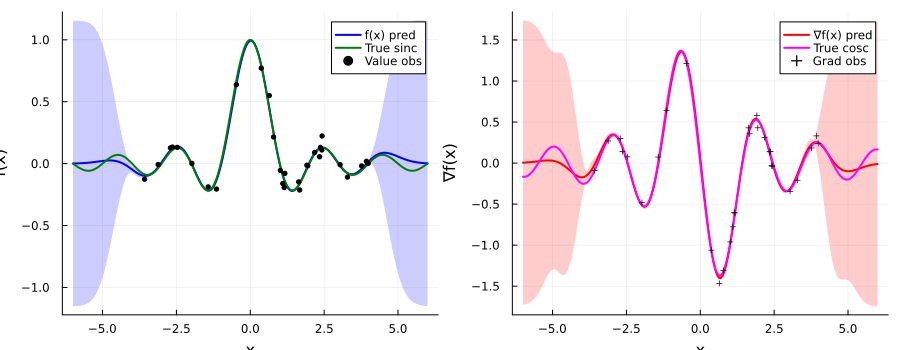

Usage Examples
This page contains executable examples that run during the documentation build. Every code block below is a live @example — the output you see is produced by the actual RxGP code.
GP Regression with Function Observations
A minimal sparse GP regression using UniSGP nodes.
1. Generate synthetic data
using RxInfer, RxGP
using BayesBase
using KernelFunctions, LinearAlgebra, Random, Plots, StableRNGs
rng = StableRNG(42)
N = 30
Nu = 20
# Training data: noisy sinc
xtrain = sort(rand(rng, N) .* 8 .- 4)
ytrain = sinc.(xtrain) .+ 0.05 .* randn(rng, N)
# Inducing inputs: evenly spaced
Xu = [[x] for x in range(-4, 4; length=Nu)]
# Test grid for prediction
xtest = [[x] for x in range(-6, 6; length=200)]
scatter(xtrain, ytrain, label="Observations", xlabel="x", ylabel="y", legend=:topright)
plot!(range(-6, 6; length=200), sinc.(range(-6, 6; length=200)),
label="True sinc(x)", lw=2, color=:green)
2. Configure the kernel
D = 1
mean_fn = (x) -> 0.0
kernel, θ_init, dim_θ = get_simple_kernel_and_params(D; kernel_spec=:SE)get_simple_kernel_and_params returns a parameterised squared-exponential kernel.
3. Define the model
@model function gp_regression(y, x, Xu, θ, mv_prior, gamma_prior)
v ~ mv_prior
w ~ gamma_prior
for i in eachindex(y)
y[i] ~ UniSGP(x[i], v, w, θ)
end
end
@meta function gpr_meta(; Xu, θ)
UniSGP() -> get_UniSGPMeta(D;
mean_fn = mean_fn,
kernel = kernel,
operator = :fn,
Xu = Xu,
θ = θ,
)
end
@initialization function gpr_init(q_v_init, q_w_init)
q(v) = q_v_init
q(w) = q_w_init
end
gpr_constraints = @constraints begin
q(v, w) = q(v)q(w)
endEach UniSGP factor connects an input x[i] and observation y[i] to the shared inducing variables v, noise precision w, and hyperparameters θ. The @meta block tells RxInfer which meta object to attach to each node type.
4. Run inference with hyperparameter optimisation
We alternate between VMP inference (E-step) and gradient-based hyperparameter updates (M-step):
using Flux, ForwardDiff
optimizer = Flux.AdaMax(0.01)
state = Flux.setup(optimizer, θ_init)
θ_opt = deepcopy(θ_init)
grad = similar(θ_opt)
q_v = MvNormalWeightedMeanPrecision(zeros(Nu), 50 * diageye(Nu))
q_w = GammaShapeRate(1e-2, 1e-2)
FE_history = Float64[]
θ_history = Vector{Float64}[] # track hyperparameters
for run in 1:15
global q_v, q_w
# E-step: run VMP inference (feed previous posterior as prior)
res = infer(
model = gp_regression(Xu=Xu, θ=θ_opt, mv_prior=q_v, gamma_prior=q_w),
data = (y=ytrain, x=[[x] for x in xtrain]),
meta = gpr_meta(Xu=Xu, θ=θ_opt),
initialization = gpr_init(q_v, q_w),
constraints = gpr_constraints,
returnvars = KeepLast(),
iterations = 2,
free_energy = true,
)
q_v = res.posteriors[:v]
q_w = res.posteriors[:w]
push!(FE_history, res.free_energy[end])
push!(θ_history, copy(θ_opt))
# M-step: optimise kernel hyperparameters
for epoch in 1:10
grad_llh_default!(grad, θ_opt;
y_data = ytrain,
x_y_data = [[x] for x in xtrain],
x_ω_data = [[x] for x in xtrain],
q_v = q_v,
q_w = q_w,
kernel = kernel,
mean_fn = mean_fn,
Xu = Xu,
)
Flux.Optimise.update!(state, θ_opt, grad)
end
end
using StatsFuns
θ_mat = reduce(hcat, θ_history)' # runs × params
p1 = plot(FE_history, xlabel="Run", ylabel="Free Energy", label="FE", lw=2, left_margin=8Plots.mm, bottom_margin=6Plots.mm)
p2 = plot(xlabel="Run", ylabel="softplus(θ)", title="Hyperparameters", left_margin=8Plots.mm, bottom_margin=6Plots.mm)
for j in 1:size(θ_mat, 2)
plot!(p2, StatsFuns.softplus.(θ_mat[:, j]), label="θ$j", lw=2)
end
plot(p1, p2, layout=(1,2), size=(900, 320))
5. Predict on the test grid
meta_fn = get_UniSGPMeta(D;
mean_fn=mean_fn, kernel=kernel,
operator=:fn, Xu=Xu, θ=θ_opt)
means, covs = predict_GP(
m_in = xtest,
q_v = q_v,
q_θ = θ_opt,
meta = meta_fn,
)
pred_μ = [m[1] for m in means]
pred_σ = [sqrt(C[1,1]) for C in covs]
plot(range(-6, 6; length=200), pred_μ, ribbon=pred_σ, fillalpha=0.2,
label="Prediction ± 1σ", lw=2, color=:blue, xlabel="x", ylabel="y",
legend=:topright)
plot!(range(-6, 6; length=200), sinc.(range(-6, 6; length=200)),
label="True sinc(x)", lw=2, color=:green)
scatter!(xtrain, ytrain, label="Observations", ms=3, color=:black)
Adding Gradient Observations
The UniSGP_dID node extends the model to observe gradients of the latent GP. We add gradient measurements using operator = :grad and a Wishart noise prior.
1. Generate gradient data
# cosc(x) = d/dx sinc(x) = (cos(πx) - sinc(x)) / x
cosc(x) = x == 0 ? zero(x) : (cos(π*x) - sinc(x)) / x
ωtrain = cosc.(xtrain) .+ 0.05 .* randn(rng, N)
xs_plot = range(-6, 6; length=200)
plot(xs_plot, sinc.(xs_plot), label="True sinc(x)", lw=2, color=:green,
xlabel="x", ylabel="y", legend=:topright)
plot!(xs_plot, cosc.(xs_plot), label="True cosc(x)", lw=2, color=:magenta)
scatter!(xtrain, ytrain, label="Value obs")
scatter!(xtrain, ωtrain, label="Gradient obs", marker=:cross)
2. Build a joint model
meta_grad = get_UniSGPMeta(D;
mean_fn = mean_fn,
kernel = kernel,
operator = :grad,
Xu = Xu,
θ = θ_init,
)
@model function gp_regression_with_grads(y, ω, x, Xu, θ, qv_params, qw_params, qWg_params)
v ~ MvNormalWeightedMeanPrecision(qv_params...)
w ~ GammaShapeRate(qw_params...)
Wg ~ Wishart(qWg_params...)
for i in eachindex(y)
y[i] ~ UniSGP(x[i], v, w, θ)
ω[i] ~ UniSGP_dID(x[i], v, Wg, θ)
end
endThe UniSGP and UniSGP_dID nodes share the same inducing variables v and hyperparameters θ, allowing the function-value and gradient observations to jointly inform the GP.
3. Infer and predict with joint operator
gp_constraints_joint = @constraints begin
q(v, w, Wg) = q(v)q(w)q(Wg)
end
@meta function joint_meta(; Xu, θ)
UniSGP() -> get_UniSGPMeta(D;
mean_fn=mean_fn, kernel=kernel,
operator=:fn, Xu=Xu, θ=θ)
UniSGP_dID() -> get_UniSGPMeta(D;
mean_fn=mean_fn, kernel=kernel,
operator=:grad, Xu=Xu, θ=θ)
end
@initialization function joint_init(qv_params, qw_params, qWg_params)
q(v) = MvNormalWeightedMeanPrecision(qv_params...)
q(w) = GammaShapeRate(qw_params...)
q(Wg) = Wishart(qWg_params...)
end
# Build operator functions for the gradient hyperparameter objective
meta_grad_obj = get_UniSGPMeta(D; mean_fn=mean_fn, kernel=kernel, operator=:grad, Xu=Xu, θ=θ_opt)
Lm_fn = getLm_fn(meta_grad_obj)
Kxx_fn = getKxx_fn(meta_grad_obj)
Kxu_fn = getKxu_fn(meta_grad_obj)
θ_joint = deepcopy(θ_opt)
state_j = Flux.setup(Flux.AdaMax(0.01), θ_joint)
grad_j = similar(θ_joint)
q_v_j = MvNormalWeightedMeanPrecision(zeros(Nu), 50 * diageye(Nu))
q_w_j = GammaShapeRate(1e-2, 1e-2)
q_Wg_j = Wishart(1, Matrix(1.0I, 1, 1))
FE_joint = Float64[]
θ_joint_history = Vector{Float64}[]
for run in 1:15
global q_v_j, q_w_j, q_Wg_j
# Feed previous posteriors as priors
res_j = infer(
model = gp_regression_with_grads(
Xu=Xu,
θ=θ_joint,
qv_params=BayesBase.params(q_v_j),
qw_params=BayesBase.params(q_w_j),
qWg_params=BayesBase.params(q_Wg_j),
),
data = (y=ytrain, ω=[[ω] for ω in ωtrain], x=[[x] for x in xtrain]),
meta = joint_meta(Xu=Xu, θ=θ_joint),
initialization = joint_init(
BayesBase.params(q_v_j),
BayesBase.params(q_w_j),
BayesBase.params(q_Wg_j),
),
constraints = gp_constraints_joint,
returnvars = KeepLast(),
iterations = 2,
free_energy = true,
)
q_v_j = res_j.posteriors[:v]
q_w_j = res_j.posteriors[:w]
q_Wg_j = res_j.posteriors[:Wg]
push!(FE_joint, res_j.free_energy[end])
push!(θ_joint_history, copy(θ_joint))
for epoch in 1:10
grad_llh_default!(grad_j, θ_joint;
y_data = ytrain,
ω_data = [[ω] for ω in ωtrain],
x_y_data = [[x] for x in xtrain],
x_ω_data = [[x] for x in xtrain],
q_v = q_v_j,
q_w = q_w_j,
q_Wg = q_Wg_j,
kernel = kernel,
Lm_fn = Lm_fn,
Kxx_fn = Kxx_fn,
Kxu_fn = Kxu_fn,
mean_fn = mean_fn,
Xu = Xu,
)
Flux.Optimise.update!(state_j, θ_joint, grad_j)
end
end
θj_mat = reduce(hcat, θ_joint_history)'
pj1 = plot(FE_joint, xlabel="Run", ylabel="Free Energy", label="FE", lw=2, left_margin=8Plots.mm, bottom_margin=6Plots.mm)
pj2 = plot(xlabel="Run", ylabel="softplus(θ)", title="Hyperparameters", left_margin=8Plots.mm, bottom_margin=6Plots.mm)
for j in 1:size(θj_mat, 2)
plot!(pj2, StatsFuns.softplus.(θj_mat[:, j]), label="θ$j", lw=2)
end
plot(pj1, pj2, layout=(1,2), size=(900, 320))
# Predict with the joint_fn_grad operator to get both function and gradient predictions
meta_joint = get_UniSGPMeta(D;
mean_fn = mean_fn,
kernel = kernel,
operator = :joint_fn_grad,
Xu = Xu,
θ = θ_joint,
)
means_j, covs_j = predict_GP(
m_in = xtest,
q_v = q_v_j,
q_θ = θ_joint,
meta = meta_joint,
)
pred_f_μ = [m[1] for m in means_j]
pred_f_σ = [sqrt(C[1,1]) for C in covs_j]
pred_g_μ = [m[2] for m in means_j]
pred_g_σ = [sqrt(C[2,2]) for C in covs_j]
xs = range(-6, 6; length=200)
p = plot(layout=(1,2), size=(900, 350), legend=:topright)
plot!(p[1], xs, pred_f_μ, ribbon=pred_f_σ, fillalpha=0.2,
label="f(x) pred", lw=2, color=:blue, xlabel="x", ylabel="f(x)")
plot!(p[1], xs, sinc.(xs), label="True sinc", lw=2, color=:green)
scatter!(p[1], xtrain, ytrain, label="Value obs", ms=3, color=:black)
plot!(p[2], xs, pred_g_μ, ribbon=pred_g_σ, fillalpha=0.2,
label="∇f(x) pred", lw=2, color=:red, xlabel="x", ylabel="∇f(x)")
plot!(p[2], xs, cosc.(xs), label="True cosc", lw=2, color=:magenta)
scatter!(p[2], xtrain, ωtrain, label="Grad obs", ms=3, marker=:cross, color=:black)
The left panel shows the function prediction and the right panel shows the gradient prediction. Both benefit from the shared inducing variables.